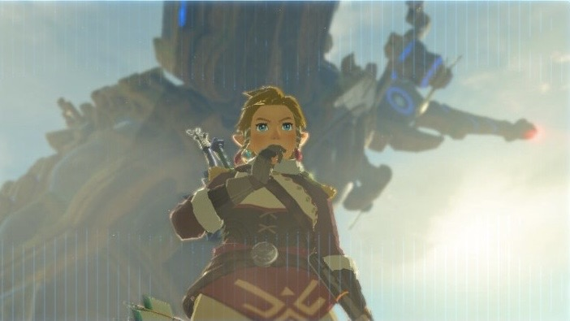
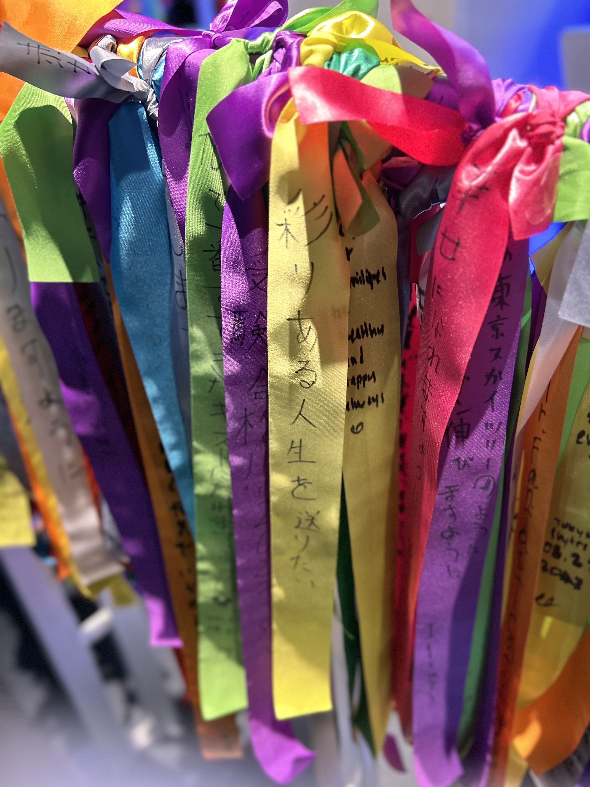

其实年中时做过一个涵盖人生方方面面的规划，每个模块都有具体的OKR和事项，像是给我在《地球Online》布置了主线任务。目前运行得还算顺畅，本来想着按它展开年终总结的，但那样就会把年终总结写成年终汇报，违背了年终总结记录成长的初衷。于是决定先谈谈今年发生的事和想法上的变化。
心态 观念
翻了翻以前的随笔和日记，发现这一年下来心态变了不少，变得平静了，但是也麻木了。了解我的人应该知道，我本来性格急躁，不乐意受挫，因而时常在焦虑下过度努力。记得去年的三四月份，我还会因为社会的、自己找实习的各种琐碎事情深陷负面情绪。但这一年下来，我好像只是在慢慢地完成着一件件事情。从上海去到波士顿生活，从英语转到计算机学习，对我来说本该是生活急剧变化的一年，我却表现得过于麻木了，没有什么惊和喜，好像只是从一个片场到了另一个片场，友情出演一段段人生。
我想，问题可能出在这里：这一年结束的几件事，付出得不算少，但结局都不是Happy Ending。四五月，似乎把时间都花在了研究开源项目上，本来计划着暑期做一段相关实习，最后因实力不够没能获得机会。六月初，结束了论文答辩，只参加了个学院的毕业典礼，学校毕业典礼时我甚至在大阪环球影城。似乎都没有体验过多久校园生活，就被迫“滚旦”了，最后留下的只有形式上的证明，正如拿不拿那句形だけ何か述べて通り過ぎ行く。九月，本来说可能有希望发表的文章，最后了无音信草草收场。后面来美几个月，隔三差五收到秋招intern岗位的拒信，跟很多全职前辈确认了不是cv和经历的问题，最后只能感叹一句时运不济。
大概出于无意识的自我保护，在过去的几个月里我并没有仔细分析这种变化的根因和意义。但现在想来，根本原因是，持续的负反馈会使人内化曾经不断抵抗的无知和无力感。现在更多是理解了把一颗石头扔下深渊而听不见任何坠地的声音，是一件再正常不过的事，这和石头多大没太大关系。比如个人是石头，社会是深渊，或者时间是石头，知识是深渊，或者追求是石头，欲望是深渊。
说回我的心态变化，接近年末时我想通了引起问题的关键——人的落点在客体上，不幸就迟早会发生。即使不得不，也不该成为海面上的浮标，要成为海底的锚。
但这种（社会的、个人的）转变也不全是坏事，在微观意义上可以说它让我活得松弛了不少。比如对任何机会，我现在的反应大多是“反正不成功很正常，先试试再说呗”，自我设限的事很少有了。毕竟在不太好的环境和无限低的预期下，试错也没什么物质成本和精神负担。
意义 未来
今年的一个晚上，跟xixi在本部校园里边逛边聊了好几个小时。我发现我们有相似的人生观，都透着虚无主义的底色，但是选择了截然不同的方法论。我过去时常为自己生活的渺小感和重复性到非常失落：对于无限的空间或是时间的尺度来说，大部分人事物都显得太无意义了些；而且历史的车轮滚滚，无法累积的个体经验只是在不断重蹈覆辙。xixi也这么觉得，但她选择用最快乐的生活方式消解虚无，因为每个当下的愉悦体验是绝对真实的，这是价值的基石。那晚我好像不是特别赞同，知道没必要说服，但也辩不出道理，只是固执地认为对抗虚无的方法是创造出至少自己认可的有价值的东西，艺术作品也好，产品也好，至少避免成为一个量产复制品，所以要为此不断努力。
大半年过去，我觉得我逐渐走上了“质疑，理解，成为”的路。
今年和一些同学朋友聊天时发现，很多思考推断、目标理想，都经不起一个“然后呢”的追问。太多人，包括抱有“创造价值”的想法的我自己，都是在用一个定义模糊的里程碑遮蔽着在那之后的迷茫——用”到了那里再说吧“搪塞着自己。其实多想一步就该知道的，后面还是一样的模式，主打一个螺旋上升版的西西弗斯，越摆周期越长的叔本华钟摆，这样做的结局就是把一生花在低头追逐虚头巴脑的东西上。
这么看，可能的确只有主体的体验是切实的，真正值得托付时间的。让我想起了野炊和王泪无限回档的、无法真正抵达的结局，好像也诉说了相同的道理。塞尔达的两部开放世界最终让我回忆起来而感到美好的，从来不是打败盖侬救下塞尔达的团圆结尾，而是在那路上，林克在海拉鲁跋涉过的火山、沙漠、雪地、草原，站在神兽顶上看到的落日，举着咕咕鸡飞行降落到的卡卡利科村，哈特诺村小溪旁等我回去的家，帮助过的笨蛋npc，路过迫害过的呀哈哈，拼了几小时的高达，洗劫过的一窝窝猪猪，回忆杀才磨过的人马。
所以明年在主线之余，我打算试试更认真地生活，先从琐碎一些的开始。

天空树上看到的许愿彩带，众多考试通过、身体健康之中格外显眼的一条： 「彩りある人生を送りたい」
